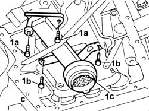
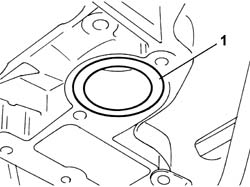
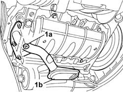

1084B28 ENGINE OIL INTAKE PUMP - R + R WITH CRANKCASE SUMP REMOVED
- Path
- Procedures > 10 ENGINE > 1084 ENGINE LUBRICATION > 1084B ENGINE OIL LUBRICATION CIRCUIT > 1084B28 ENGINE OIL INTAKE PUMP - R + R WITH CRANKCASE SUMP REMOVED
- Kind
- repair procedure (removal / refitting; the operation number is the code)
- Applies to
- all engines; all production periods
- Interactive page
- https://sloeber94.github.io/elrnDB-fUlss/en/#/179007170
Applies to: engines: 3.0 24V V6; all production periods
 Removing
Removing
 Refitting
Refitting1. Undo the fixing bolts (1a) and (1b) then remove the engine oil intake duct (1c).

Applies to: engines: 3.0 24V V6; all production periods
1. Remove the gasket.

Applies to: engines: 3.0 24V V6; all production periods
Refitting
Removing- Replace the gasket.
- Place the intake duct in position and tighten the fixing bolts to the recommended torque.
 | Value - daNm | Fastening | Component | Ø |
|---|---|---|---|---|
. | 0.8 | Bolt | ENGINE OIL INTAKE DUCT - R.R ON CRANKCASE SUMP |
Applies to: engines: 2.0 16v; all production periods
Removing
Refitting1. Undo the fixing nuts and bolts (1a) and remove the engine oil intake duct (1b).

Applies to: engines: 2.0 16v; all production periods
Refitting
Removing- Place the intake duct in position and tighten the fixing nuts and bolts.
Applies to: engines: 2.0 16V JTD; all production periods
See in Op. 1084B10
Applies to: engines: 2.2 16V JTD; all production periods
See in Op. 1084B10